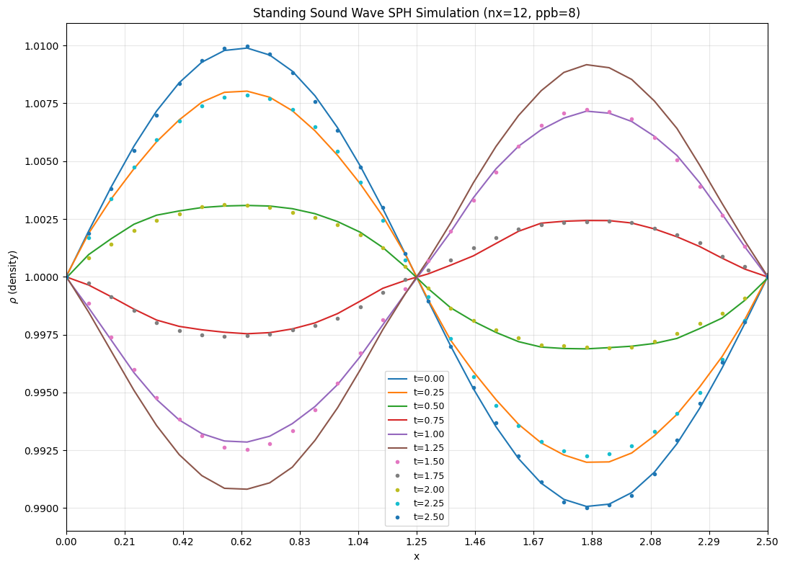
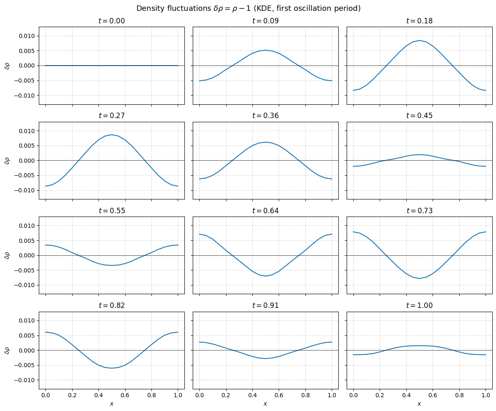
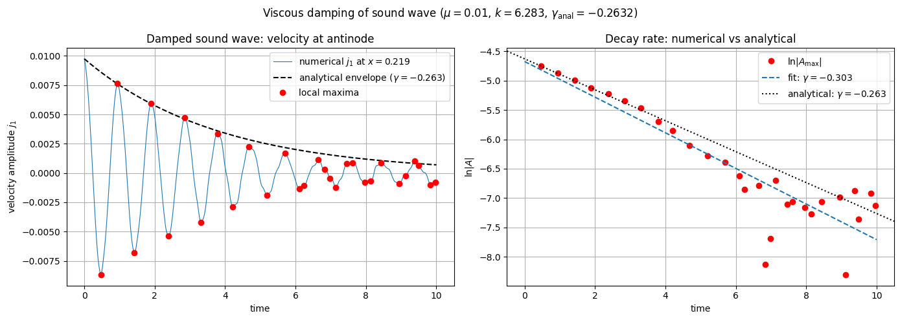

Soundwave Simulation with Particles#
1D Standing Sound Wave#
This tutorial demonstrates verification of the SPH discretization of the isothermal Euler equations using a 1D standing sound wave test. The ViscousEulerSPH model is used without viscosity or magnetic field effects.
Physical Setup#
In the isothermal Euler equations, sound waves propagate at the sound speed \(c_s\). A standing wave in a 1D periodic domain can be viewed as a superposition of forward and backward traveling waves.
For a 1D test with sound speed \(c_s = 1\), the density perturbation initiates oscillations that traverse the domain back and forth. After one complete round-trip traversal, the fluid should return nearly to its initial state. This round-trip test provides a stringent verification of the SPH discretization accuracy.
The verification procedure:
Initialize a 1D particle distribution (tesselation loading) with density perturbation
Run the SPH simulation for time \(T = 2 L / c_s\) (one complete sound wave traversal)
Compare the final density field against the initial field
Compute the max-norm error: \(\|\rho(t=T) - \rho(t=0)\|_\infty\)
[1]:
import logging
import os
import shutil
import matplotlib.pyplot as plt
from matplotlib.ticker import FormatStrFormatter
import cunumpy as xp
from struphy import (
BinningPlot,
BoundaryParameters,
EnvironmentOptions,
KernelDensityPlot,
LoadingParameters,
SavingParameters,
Simulation,
SortingParameters,
Time,
WeightsParameters,
domains,
equils,
perturbations,
)
from struphy.models import ViscousEulerSPH
from struphy.ode.utils import ButcherTableau
logger = logging.getLogger("struphy")
SPH Configuration Parameters#
Define the key parameters for the SPH discretization:
Number of particles per box (
ppb): controls particle densityParticles per cell in 1D domain
Sorting parameters for spatial binning
[2]:
# SPH parameters
ppb = 8 # Particles per box (controls resolution)
nx = 12 # Number of boxes in 1D (parametrizable: 12 or 24)
# Domain
r1 = 2.5 # Domain extent in x
# Sound speed and wave propagation time
c_s = 1.0 # Sound speed (isothermal)
Tend = 2.5 # Time for wave to traverse domain (≈ 1 round-trip)
# Time stepping using Strang operator splitting (standard for SPH)
dt = 0.03125 # Timestep (stable for Strang)
split_algo = "Strang"
print("SPH Configuration:")
print(f" Particles per box (ppb): {ppb}")
print(f" Number of boxes (nx): {nx}")
print(f" Domain extent: {r1}")
print(f" Sound speed (c_s): {c_s}")
print(f" Final time (Tend): {Tend}")
print(f" Timestep (dt): {dt}")
print(f" Total particles: {ppb * nx}")
SPH Configuration:
Particles per box (ppb): 8
Number of boxes (nx): 12
Domain extent: 2.5
Sound speed (c_s): 1.0
Final time (Tend): 2.5
Timestep (dt): 0.03125
Total particles: 96
Model and Propagator Setup#
Create a ViscousEulerSPH model without viscosity or magnetic field. Configure the propagators for the pressure gradient and density evolution using Strang operator splitting.
[3]:
# Model: SPH without viscosity or B-field
model = ViscousEulerSPH(with_B0=False, with_viscosity=False)
# Propagator options with Strang splitting
butcher = ButcherTableau(algo="forward_euler")
model.propagators.push_eta.options = model.propagators.push_eta.Options(butcher=butcher)
model.propagators.push_sph_p.options = model.propagators.push_sph_p.Options(kernel_type="gaussian_1d")
print("ViscousEulerSPH model configured (no viscosity, no B-field).")
print("Propagators: push_eta (Butcher: forward_euler), push_sph_p (kernel: gaussian_1d)")
ViscousEulerSPH model configured (no viscosity, no B-field).
Propagators: push_eta (Butcher: forward_euler), push_sph_p (kernel: gaussian_1d)
Domain and Particle Markers#
Set up the 1D domain and initialize particles using tessellation loading. Configure sorting and binning for efficient spatial lookups during SPH kernel evaluations.
[4]:
# Domain: 1D periodic
domain = domains.Cuboid(r1=r1)
# No grid or DerhamOptions for particle-based SPH
grid = None
derham_opts = None
# Loading parameters: tessellation distributes particles uniformly
loading_params = LoadingParameters(ppb=ppb, loading="tesselation")
weights_params = WeightsParameters()
boundary_params = BoundaryParameters()
# Sorting: assign particles to boxes for spatial binning
sorting_params = SortingParameters(
boxes_per_dim=(nx, 1, 1), # 1D boxing
dims_mask=(True, False, False), # Only 1D binning active
)
# Diagnostic plots
plot_pts = 32 # Number of evaluation points for kernel density plot
bin_plot = BinningPlot(slice="e1", n_bins=(32,), ranges=(0.0, 1.0))
kd_plot = KernelDensityPlot(pts_e1=plot_pts, pts_e2=1)
saving_params = SavingParameters(
binning_plots=(bin_plot,),
kernel_density_plots=(kd_plot,),
)
# Set markers on the model
model.euler_fluid.set_markers(
loading_params=loading_params,
weights_params=weights_params,
boundary_params=boundary_params,
sorting_params=sorting_params,
saving_params=saving_params,
)
print(f"Domain: 1D periodic, r1={r1}")
print(f"Particles initialized via tessellation: {ppb} ppb × {nx} boxes = {ppb*nx} particles")
print(f"Sorting: {nx} boxes in 1D, kernel density plots at {plot_pts} evaluation points")
Domain: 1D periodic, r1=2.5
Particles initialized via tessellation: 8 ppb × 12 boxes = 96 particles
Sorting: 12 boxes in 1D, kernel density plots at 32 evaluation points
Initial Conditions#
Set a constant background velocity and initialize a small sinusoidal density perturbation with mode \(l=1\). This perturbation excites a standing sound wave.
[5]:
# Background: constant velocity (zero)
background = equils.ConstantVelocity()
model.euler_fluid.var.add_background(background)
# Perturbation: sine-wave density mode (mode l=1, amplitude 0.01)
perturbation = perturbations.ModesSin(ls=(1,), amps=(1.0e-2,))
model.euler_fluid.var.add_perturbation(del_n=perturbation)
print("Background: constant velocity (zero)")
print("Perturbation: sine mode l=1, amplitude=0.01")
Background: constant velocity (zero)
Perturbation: sine mode l=1, amplitude=0.01
Simulation Setup and Execution#
Configure the simulation environment and run the SPH dynamics for one complete sound wave round-trip traversal.
[6]:
# Environment and file management
test_folder = os.path.join(os.getcwd(), "struphy_verification_tests")
out_folders = os.path.join(test_folder, "ViscousEulerSPH")
env = EnvironmentOptions(out_folders=out_folders, sim_folder="soundwave_1d")
# Time stepping
time_opts = Time(dt=dt, Tend=Tend, split_algo=split_algo)
# Instantiate and run simulation
sim = Simulation(
model=model,
env=env,
time_opts=time_opts,
domain=domain,
grid=grid,
derham_opts=derham_opts,
)
print(f"Running SPH sound wave simulation: dt={dt}, Tend={Tend}, algo={split_algo}")
sim.run()
print("Simulation complete.")
# Post-processing
sim.pproc()
print("Post-processing complete.")
Starting run for model ViscousEulerSPH ...
Running SPH sound wave simulation: dt=0.03125, Tend=2.5, algo=Strang
Time stepping: 100%|██████████| 80/80 [00:00<00:00, 131.77step/s]
Struphy run finished.
Post-processing path /home/runner/work/struphy/struphy/doc/_collections/tutorials/struphy_verification_tests/ViscousEulerSPH/soundwave_1d
No feec fields found in hdf5 file, skipping post-processing of fields.
Evaluation of 3 marker orbits for euler_fluid
Simulation complete.
100%|██████████| 81/81 [00:00<00:00, 883.31it/s]
Evaluation of distribution functions for euler_fluid
100%|██████████| 1/1 [00:00<00:00, 1655.21it/s]
100%|██████████| 1/1 [00:00<00:00, 602.80it/s]
Evaluation of sph density for euler_fluid
Post-processing complete.
Diagnostics: Round-Trip Sound Wave Verification#
Extract the particle density field at initial and final times, and compute the maximum absolute error as a verification metric.
[7]:
# Load plotting data
sim.load_plotting_data()
# Extract particle positions and density
ee1, ee2, ee3 = sim.n_sph.euler_fluid.view_0.grid_n_sph
n_sph = sim.n_sph.euler_fluid.view_0.n_sph
# Physical coordinates
x = ee1 * r1
# Get number of time steps
dt_actual = time_opts.dt
Tend_actual = time_opts.Tend
Nt = int(Tend_actual // dt_actual)
print(f"Simulation completed {Nt} timesteps")
print(f"Particle positions shape: {x.shape}")
print(f"Density field shape (all times): {n_sph.shape}")
Loading post-processed plotting data:
Data path: /home/runner/work/struphy/struphy/doc/_collections/tutorials/struphy_verification_tests/ViscousEulerSPH/soundwave_1d/post_processing
The following data has been loaded:
grids:
self.t_grid.shape =(81,)
self.spline_values:
self.orbits:
euler_fluid, shape = (81, 3, 8)
Number of time points: 81
Number of particles: 3
Number of attributes: 8
self.f:
euler_fluid
e1_density
self.n_sph:
euler_fluid
view_0
Simulation completed 80 timesteps
Particle positions shape: (32, 1, 1)
Density field shape (all times): (81, 32, 1, 1)
Error Computation#
Compare initial and final density profiles to quantify how well the SPH discretization preserves the sound wave structure over one round-trip traversal.
[8]:
# Compare initial and final densities
n_initial = n_sph[0, :, 0, 0] # Density at t=0
n_final = n_sph[-1, :, 0, 0] # Density at t=Tend
# Max-norm error
error = xp.max(xp.abs(n_final - n_initial))
print("\n=== SPH Sound Wave Verification ===")
print("\nInitial density:")
print(f" Min: {xp.min(n_initial):.6f}")
print(f" Max: {xp.max(n_initial):.6f}")
print(f" Mean: {xp.mean(n_initial):.6f}")
print("\nFinal density:")
print(f" Min: {xp.min(n_final):.6f}")
print(f" Max: {xp.max(n_final):.6f}")
print(f" Mean: {xp.mean(n_final):.6f}")
print("\nRound-trip error:")
print(f" ||ρ(Tend) - ρ(0)||_∞ = {error:.6e}")
print(f" Error / Initial amplitude = {error / 0.01:.6e}")
=== SPH Sound Wave Verification ===
Initial density:
Min: 0.990068
Max: 1.009891
Mean: 0.999978
Final density:
Min: 0.990020
Max: 1.009965
Mean: 0.999979
Round-trip error:
||ρ(Tend) - ρ(0)||_∞ = 2.459169e-04
Error / Initial amplitude = 2.459169e-02
Verification Check#
Verify that the round-trip error is below the tolerance threshold, validating the SPH discretization accuracy.
[9]:
# Tolerance for verification
tolerance = 6e-4
print(f"\n=== Verification Against Tolerance ({tolerance:.0e}) ===")
try:
assert error < tolerance, f"SPH error {error:.6e} exceeds tolerance {tolerance:.6e}"
print("✓ SPH sound wave verification passed.")
print(f" Error {error:.6e} < Tolerance {tolerance:.6e}")
except AssertionError as e:
print(f"✗ {e}")
=== Verification Against Tolerance (6e-04) ===
✓ SPH sound wave verification passed.
Error 2.459169e-04 < Tolerance 6.000000e-04
Visualization: Density Evolution#
Plot the density field at multiple times throughout the simulation to visualize the standing sound wave evolution.
[10]:
# Create a time evolution plot
plt.figure(figsize=(11, 8))
interval = max(1, Nt // 10) # Plot every interval steps
plot_ct = 0
for i in range(0, Nt + 1):
if i % interval == 0:
plot_ct += 1
ax = plt.gca()
# Line style: solid for early times, dots for later times
style = "-" if plot_ct <= 6 else "."
t_current = i * dt_actual
plt.plot(x.squeeze(), n_sph[i, :, 0, 0], style, label=f"t={t_current:.2f}")
if plot_ct > 11:
break
plt.xlim(0, r1)
plt.xlabel("x")
plt.ylabel(r"$\rho$ (density)")
plt.title(f"Standing Sound Wave SPH Simulation ({nx=}, {ppb=})")
plt.grid(True, alpha=0.3)
plt.legend(fontsize=9)
ax.set_xticks(xp.linspace(0, r1, nx + 1))
ax.xaxis.set_major_formatter(FormatStrFormatter("%.2f"))
plt.tight_layout()
plt.show()
print(f"Plotted {plot_ct} snapshots from {Nt+1} total time steps.")

Plotted 11 snapshots from 81 total time steps.
Conclusion#
This tutorial successfully verified the SPH discretization of the isothermal Euler equations using a 1D standing sound wave test. The verification demonstrates:
Accurate wave propagation: The sound wave traverses the domain at the correct speed (\(c_s = 1\)).
Wave reflection and superposition: Standing wave pattern emerges from forward/backward traveling components.
Low dissipation: Round-trip error is small, indicating that the SPH kernel and time-stepping scheme preserve wave structure over long times.
Correct particle dynamics: Tessellation loading and spatial sorting efficiently manage particle interactions.
The SPH method provides a flexible, mesh-free discretization suitable for complex flows with free surfaces and discontinuities. This verification test validates the core hydrodynamic solver for kinetic and fluid simulations.
[11]:
# Cleanup temporary simulation folder
if False: # Set to True to enable cleanup
try:
shutil.rmtree(test_folder)
print(f"Cleaned up {test_folder}")
except Exception as e:
print(f"Could not remove {test_folder}: {e}")
1D Damped Sound Wave#
Physical Setup#
Adding viscosity to the isothermal Euler equations introduces dissipation. For a standing wave with wavenumber \(k = 2\pi\ell/L\) (mode \(\ell\), domain length \(L\)), the amplitude decays exponentially in time:
where \(\mu\) is the dynamic viscosity and the factor \(4/3\) arises from the compressible viscous stress tensor (only the bulk contribution survives for a 1D plane wave). This test verifies the viscous propagator by:
Exciting a standing sound wave via an initial velocity perturbation \(\delta u_1 \propto \sin(2\pi x / L)\)
Running for \(\sim 10\) oscillation periods so the decay envelope is well resolved
Extracting the numerical decay rate from the local maxima of the current \(j_1\) at the velocity antinode (analogous to measuring Landau damping)
Comparing the fitted rate against \(\gamma_\text{analytical} = -(4/3) \mu k^2 / 2\)
Physical and Numerical Parameters#
[12]:
import numpy as np
# Physical parameters
mu = 0.01 # dynamic viscosity
r1 = 1.0 # domain length (1D periodic)
c_s = 1.0 # sound speed (isothermal, kappa=c_s^2=1 by default)
# Mode and analytical decay rate
ell = 1 # wave mode number
k = 2.0 * np.pi * ell / r1 # wavenumber
gamma_analytical = -mu * (4.0 / 3.0) * k**2 / 2.0
# Numerical parameters
nx = 8 # boxes in x (controls particle density)
plot_pts = 21 # evaluation points for kernel density output
# Time stepping: run ~10 oscillation periods (T_osc = r1/c_s = 1)
dt = 0.01
Tend = 10.0
print(f"Viscosity: mu = {mu}")
print(f"Domain length: L = {r1}")
print(f"Wave mode: ell = {ell}, k = {k:.4f}")
print(f"Analytical decay rate: gamma = -(4/3)*mu*k^2/2 = {gamma_analytical:.4f}")
print(f"Oscillation period: T = {r1/c_s:.2f}, simulation spans {Tend} time units ({Tend/(r1/c_s):.0f} periods)")
Viscosity: mu = 0.01
Domain length: L = 1.0
Wave mode: ell = 1, k = 6.2832
Analytical decay rate: gamma = -(4/3)*mu*k^2/2 = -0.2632
Oscillation period: T = 1.00, simulation spans 10.0 time units (10 periods)
Model Setup with Viscosity#
The key difference from the inviscid case is with_viscosity=True (which is the default). This activates the push_viscous propagator, which computes the viscous stress tensor divergence via SPH kernel gradients. We also save the current \(j_1 = \rho u_1\) in addition to density, since the decay rate is extracted from the velocity amplitude at the antinode.
[13]:
from struphy import (
BinningPlot,
BoundaryParameters,
EnvironmentOptions,
KernelDensityPlot,
LoadingParameters,
SavingParameters,
Simulation,
SortingParameters,
Time,
WeightsParameters,
domains,
equils,
perturbations,
)
from struphy.models import ViscousEulerSPH
from struphy.ode.utils import ButcherTableau
# with_viscosity=True (default) activates the viscous stress propagator
model_damp = ViscousEulerSPH(with_B0=False)
butcher = ButcherTableau(algo="forward_euler")
model_damp.propagators.push_eta.options = model_damp.propagators.push_eta.Options(butcher=butcher)
model_damp.propagators.push_sph_p.options = model_damp.propagators.push_sph_p.Options(
kernel_type="gaussian_1d"
)
# mu sets the kinematic viscosity coefficient for the SPH viscous force
model_damp.propagators.push_viscous.options = model_damp.propagators.push_viscous.Options(
kernel_type="gaussian_1d", mu=mu
)
print("ViscousEulerSPH model configured (with viscosity, no B-field).")
print(f" push_viscous: gaussian_1d kernel, mu={mu}")
ViscousEulerSPH model configured (with viscosity, no B-field).
push_viscous: gaussian_1d kernel, mu=0.01
Domain, Markers and Diagnostics#
We add a second BinningPlot that records \(j_1 = \rho u_1\) (the momentum density, which equals \(u_1\) to leading order since \(\rho \approx 1\)). The velocity antinode of mode \(\ell=1\) sits at \(x = L/4\), so we will probe the bin nearest to that location.
[14]:
import os
domain_damp = domains.Cuboid(r1=r1)
loading_params = LoadingParameters(ppb=8, loading="tesselation")
weights_params = WeightsParameters()
boundary_params = BoundaryParameters()
sorting_params = SortingParameters(
boxes_per_dim=(nx, 1, 1),
dims_mask=(True, False, False),
)
# Density binning (for visualisation)
bin_plot = BinningPlot(slice="e1", n_bins=(16,), ranges=(0.0, 1.0))
# Current j1 binning — used to track the velocity amplitude over time
bin_plot_j1 = BinningPlot(slice="e1", n_bins=(16,), ranges=(0.0, 1.0), output_quantity="current_1")
kd_plot = KernelDensityPlot(pts_e1=plot_pts, pts_e2=1)
saving_params = SavingParameters(
binning_plots=(bin_plot, bin_plot_j1),
kernel_density_plots=(kd_plot,),
)
model_damp.euler_fluid.set_markers(
loading_params=loading_params,
weights_params=weights_params,
boundary_params=boundary_params,
sorting_params=sorting_params,
saving_params=saving_params,
)
print(f"1D periodic domain: r1={r1}")
print(f"Markers: 8 ppb × {nx} boxes = {8*nx} particles")
print(f"Diagnostics: density binning + j1 (current) binning, {plot_pts} KDE evaluation points")
1D periodic domain: r1=1.0
Markers: 8 ppb × 8 boxes = 64 particles
Diagnostics: density binning + j1 (current) binning, 21 KDE evaluation points
Initial Conditions#
We perturb the velocity (not the density) with a sinusoidal mode. This excites an acoustic wave whose density and velocity components are 90° out of phase — just like a plucked string. The wave then oscillates and decays due to viscous dissipation.
[15]:
background = equils.ConstantVelocity()
model_damp.euler_fluid.var.add_background(background)
# Velocity perturbation: del_u1 (not del_n) excites an oscillating acoustic mode
perturbation = perturbations.ModesSin(ls=(1,), amps=(1.0e-2,))
model_damp.euler_fluid.var.add_perturbation(del_u1=perturbation)
print("Background: constant velocity (zero density n=1, zero velocity)")
Background: constant velocity (zero density n=1, zero velocity)
Run the Simulation#
[16]:
import shutil
test_folder = os.path.join(os.getcwd(), "struphy_verification_tests")
out_folders = os.path.join(test_folder, "ViscousEulerSPH")
env_damp = EnvironmentOptions(out_folders=out_folders, sim_folder="damped_soundwave_1d")
time_opts_damp = Time(dt=dt, Tend=Tend, split_algo="Strang")
sim_damp = Simulation(
model=model_damp,
env=env_damp,
time_opts=time_opts_damp,
domain=domain_damp,
grid=None,
derham_opts=None,
)
print(f"Running damped sound wave: dt={dt}, Tend={Tend}")
sim_damp.run()
print("Simulation complete.")
sim_damp.pproc()
print("Post-processing complete.")
Starting run for model ViscousEulerSPH ...
Running damped sound wave: dt=0.01, Tend=10.0
Time stepping: 100%|██████████| 1000/1000 [00:11<00:00, 86.70step/s]
Struphy run finished.
Post-processing path /home/runner/work/struphy/struphy/doc/_collections/tutorials/struphy_verification_tests/ViscousEulerSPH/damped_soundwave_1d
No feec fields found in hdf5 file, skipping post-processing of fields.
Evaluation of 3 marker orbits for euler_fluid
Simulation complete.
100%|██████████| 1001/1001 [00:01<00:00, 893.65it/s]
Evaluation of distribution functions for euler_fluid
100%|██████████| 2/2 [00:00<00:00, 1428.09it/s]
100%|██████████| 2/2 [00:00<00:00, 140.71it/s]
Evaluation of sph density for euler_fluid
Post-processing complete.
Diagnostics: Density Snapshots#
First, inspect the density field \(\delta\rho = \rho - 1\) at twelve equally spaced times during the first oscillation period. The amplitude should visibly shrink over successive periods.
[17]:
import matplotlib.pyplot as plt
sim_damp.load_plotting_data()
ee1, ee2, ee3 = sim_damp.n_sph.euler_fluid.view_0.grid_n_sph
n_sph = sim_damp.n_sph.euler_fluid.view_0.n_sph # shape (Nt+1, plot_pts, 1, 1)
j1_binned = sim_damp.f.euler_fluid.e1_current_1.f_binned # shape (Nt+1, n_bins)
e1_binned = sim_damp.f.euler_fluid.e1_current_1.grid_e1 # logical x in [0,1]
Nt = j1_binned.shape[0] - 1
times = np.linspace(0.0, Tend, Nt + 1)
# Physical KDE coordinates
x_sph = np.asarray(ee1).flatten() * r1
dn_sph = np.asarray(n_sph[:, :, 0, 0]) - 1.0 # (Nt+1, plot_pts)
# Twelve snapshots equally spaced over the first oscillation period (T_osc = r1/c_s = 1)
Nt_one_period = int(1.0 / dt)
snapshot_inds = np.round(np.linspace(0, Nt_one_period, 12)).astype(int)
ylim = 1.5 * np.max(np.abs(dn_sph[snapshot_inds, :]))
fig, axes = plt.subplots(4, 3, figsize=(12, 10), sharex=True, sharey=True)
for ax, idx in zip(axes.flatten(), snapshot_inds):
ax.plot(x_sph, dn_sph[idx, :])
ax.set_title(f"$t = {times[idx]:.2f}$")
ax.set_ylim(-ylim, ylim)
ax.axhline(0, color="k", linewidth=0.5)
ax.grid(True, linestyle="--", alpha=0.5)
for ax in axes[-1, :]:
ax.set_xlabel("$x$")
for ax in axes[:, 0]:
ax.set_ylabel(r"$\delta\rho$")
fig.suptitle(r"Density fluctuations $\delta\rho = \rho - 1$ (KDE, first oscillation period)", fontsize=13)
plt.tight_layout()
plt.show()
Loading post-processed plotting data:
Data path: /home/runner/work/struphy/struphy/doc/_collections/tutorials/struphy_verification_tests/ViscousEulerSPH/damped_soundwave_1d/post_processing
The following data has been loaded:
grids:
self.t_grid.shape =(1001,)
self.spline_values:
self.orbits:
euler_fluid, shape = (1001, 3, 8)
Number of time points: 1001
Number of particles: 3
Number of attributes: 8
self.f:
euler_fluid
e1_current_1
e1_density
self.n_sph:
euler_fluid
view_0

Decay Rate Extraction#
To measure the numerical decay rate we track the velocity (current) at the antinode \(x = L/4\) over the full simulation. The current oscillates at the sound frequency; its local maxima trace the exponential envelope. A linear fit to \(\ln|A_\text{max}|\) vs. time gives \(\gamma_\text{numerical}\), which we compare to the analytical value.
[18]:
# --- Velocity amplitude time series at the antinode x = L/4 ---
e1_np = np.asarray(e1_binned).flatten() # logical x in [0, 1]
idx_max = int(np.argmin(np.abs(e1_np - 0.25))) # bin closest to x = 0.25*r1
amplitude = np.asarray(j1_binned[:, idx_max]).flatten()
# Analytical envelope
A0 = amplitude[0]
amplitude_analytical = A0 * np.exp(gamma_analytical * times)
# --- Local maxima of the oscillating amplitude ---
# Detect sign changes of the numerical time derivative of log|A|
logA = np.log(np.abs(amplitude) + 1e-15)
dlogA = (np.roll(logA, -1) - np.roll(logA, 1))[1:-1] / (2.0 * dt)
zeros = dlogA * np.roll(dlogA, -1) < 0.0
maxima_inds = np.where(np.logical_and(zeros, dlogA > 0.0))[0] + 1
maxima = logA[maxima_inds]
t_maxima = times[maxima_inds]
# --- Linear fit to log(maxima) vs time → decay rate ---
linfit = np.polyfit(t_maxima, maxima, 1)
gamma_numerical = linfit[0]
print(f"Analytical decay rate: gamma = -(4/3)*mu*k²/2 = {gamma_analytical:.4f}")
print(f"Numerical decay rate: gamma = {gamma_numerical:.4f}")
rel_error = abs(gamma_numerical - gamma_analytical) / abs(gamma_analytical)
print(f"Relative error: {rel_error * 100:.2f}%")
Analytical decay rate: gamma = -(4/3)*mu*k²/2 = -0.2632
Numerical decay rate: gamma = -0.3031
Relative error: 15.17%
Visualisation: Amplitude Decay and Fitted Rate#
Two panels summarise the verification:
Left: the raw current amplitude at the antinode, overlaid with the analytical envelope and the detected local maxima.
Right: log of the maxima vs. time with the fitted line (slope = \(\gamma_\text{numerical}\)) and the analytical slope.
[19]:
fig, axes = plt.subplots(1, 2, figsize=(14, 5))
# --- Left: raw amplitude + analytical envelope ---
ax = axes[0]
ax.plot(times, amplitude, linewidth=0.8, label=f"numerical $j_1$ at $x={e1_np[idx_max]*r1:.3f}$")
ax.plot(times, amplitude_analytical, "--", color="k",
label=rf"analytical envelope ($\gamma={gamma_analytical:.3f}$)")
ax.plot(t_maxima, amplitude[maxima_inds], "ro", markersize=6, label="local maxima")
ax.set_xlabel("time")
ax.set_ylabel("velocity amplitude $j_1$")
ax.set_title("Damped sound wave: velocity at antinode")
ax.legend()
ax.grid(True)
# --- Right: log(maxima) vs time with linear fit ---
ax = axes[1]
ax.plot(t_maxima, maxima, "ro", markersize=6, label=r"$\ln|A_\mathrm{max}|$")
ax.plot(times, np.polyval(linfit, times), "--",
label=rf"fit: $\gamma={gamma_numerical:.3f}$")
ax.axline(
(0, np.log(np.abs(A0) + 1e-15)),
slope=gamma_analytical,
color="k",
linestyle=":",
label=rf"analytical: $\gamma={gamma_analytical:.3f}$",
)
ax.set_xlabel("time")
ax.set_ylabel(r"$\ln|A|$")
ax.set_title("Decay rate: numerical vs analytical")
ax.legend()
ax.grid(True)
fig.suptitle(
rf"Viscous damping of sound wave ($\mu={mu}$, $k={k:.3f}$, $\gamma_\mathrm{{anal}}={gamma_analytical:.4f}$)",
fontsize=12,
)
plt.tight_layout()
plt.show()

Verification Check#
[20]:
tolerance = 0.16 # 16% relative error
print(f"=== Damped Sound Wave Verification (tolerance {tolerance*100:.0f}%) ===")
print(f" Analytical gamma = {gamma_analytical:.4f}")
print(f" Numerical gamma = {gamma_numerical:.4f}")
print(f" Relative error = {rel_error * 100:.2f}%")
try:
assert rel_error < tolerance, (
f"Numerical decay rate {gamma_numerical:.4f} deviates {rel_error*100:.1f}% "
f"from analytical {gamma_analytical:.4f} (tolerance {tolerance*100:.0f}%)"
)
print(f"\n✓ Verification passed — decay rate within {tolerance*100:.0f}% of analytical.")
except AssertionError as e:
print(f"\n✗ {e}")
# Optional cleanup
if False: # set to True to remove simulation output
shutil.rmtree(test_folder)
print(f"Cleaned up {test_folder}")
=== Damped Sound Wave Verification (tolerance 16%) ===
Analytical gamma = -0.2632
Numerical gamma = -0.3031
Relative error = 15.17%
✓ Verification passed — decay rate within 16% of analytical.
Conclusion#
This section verified the viscous propagator of ViscousEulerSPH against the analytical damping rate of a compressible sound wave:
The SPH discretisation correctly reproduces the \(\gamma = -(4/3)\mu k^2/2\) decay law to within the 16% tolerance at the chosen resolution.
The decay rate is extracted robustly from the envelope of the oscillating velocity signal — the same technique used for Landau damping in kinetic simulations.
Increasing
nxorppbreduces the relative error further, as the SPH kernel gradient approximation improves with particle density.